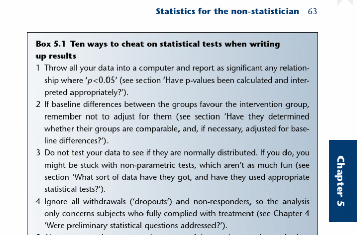

An introduction to EBM (session 4)
skills
beginner
evidence-based medicine
critical appraisal
clinical trials
Session outline
- this session is about core EBM statistics:
- Greenhalgh’s three numbers (Greenhalgh 2019, 54):
- sample size
- duration of follow-up
- completeness of follow-up
- confidence intervals
- p-values
- effect sizes
- Greenhalgh’s three numbers (Greenhalgh 2019, 54):
Exercises
- E1: what’s this all for?
- E2: ways to cheat
- E3: putting it all together
Introduction
This is non-technical, and non-comprehensive
- medical statistics is big and complicated
- hundreds of statistical tests
- many are formidably complicated
- really nice advice in chapter 5 of Greenhalgh’s book
- so we’re just looking at a few core areas
- statistics are widely abused in the health literature
- this gives rise to worries about statistics in general terms
- e.g. suggestions that the use of statistics might be driving a mistaken approach to clinical research in very general terms (Heneghan, Goldacre, and Mahtani 2017)
E1: what’s this all for?
Finding out if treatments work is hard
- most examples are not like the parachute case (Xu and Prasad 2022)
- most treatment effects are subtle
- statistics are a vital way of being more sure about the results we get
Note
- the Number Needed to Treat is the number of patients that need to be treated to prevent an undesirable outcome
- NNTs are often startlingly high
Sample size (n)
Introduction
- as treatment effects are subtle, we often need to use large groups of participants
- as we’ll see, there are concerns about margins of error that explain this - later!
- trials have grown:
- MRC streptomycin study, 1948, 109 participants (“Streptomycin Treatment of Pulmonary Tuberculosis: A Medical Research Council Investigation” 1948)
- WOSCOPS, 1995, 6595 participants (Shepherd 1995)
- TRITON, 2009, 3534 participants (Montalescot et al. 2009)
- RE-LY, 2010, 18113 participants (Wallentin et al. 2010)
- see also worries about the logic of large trials in medicine (Penston 2005) and elsewhere (Lortie-Forgues and Inglis 2019) - “often uninformative”
The problem of growing sample sizes
- recruitment is hard
- larger n = harder recruitment
- may end up relying on heterogeneous population
- e.g. Montalescot et al. (2009)
- 3534 participants
- 707 sites
- 30 countries
- may end up relying on heterogeneous population
Confidence intervals
- or, why make things so large?
- intuition: the larger our sample, the more precise our estimates
Confidence intervals
- imagine we’re evaluating an intervention in a small population
- 10% of the treatment arm get some outcome, compared to 12% in the control arm
- relative risk in this trial population = 83%
- Q: what will the relative risk be in the whole population?
The idea of sampling error
- our measure of risk in our small population sample might not accurately reflect the true population risk
- AKA standard error
- we can’t say exactly how accurate our sample estimate is
- unless we know the true population risk
- but we can give an interval estimate for our measurement, effectively describing likely lower and upper values within which the estimate might lie
Confidence intervals
- for our example with 83% relative risk, our confidence interval might be between 75% and 91%
- we could say “the chances are that our ‘real’ population risk would be between 75% and 91%”
- we conventionally use 95% confidence for these kinds of EBM estimates of confidence
- effectively, saying that there’s a 95% chance the ‘true’ population risk is contained within this interval
- you might see these expressed as 95% CIs in print
- Sedgwick (2014b) is a good next-step reading on CIs
E2: ways to cheat
Task
- Take Greenhalgh’s list of ways to cheat
- Are there any areas where your paper from the previous session might be faulty in this way?
p-values
Introduction
- imagine that you’re looking at a 95% CI that is reported as follows:
- “the relative risk of death in the intervention group compared to the control group was 92% (95% CI 72-112%)”
- what does this result mean to you?
- is there a real reduction of death in the intervention group?
- “the relative risk of death in the intervention group compared to the control group was 92% (95% CI 72-112%)”
- that wide confidence interval means the population risk might well be 100% - the control group might not prevent death at all
- what does this mean for us?
two kinds of statistical work
- descriptive statistics = what do these numbers look like
- inferential statistics = what do these numbers tell us
hypothesis testing
- technically, RCT reports are hypothesis tests
- hypothesis = educated guess about outcomes
- hypothesis testing is definitely part of inferential statistics
- hypothesis vs null hypothesis
- what we think will happen if the treatment works
- what we think will happen if the treatment does not work
does the data support the hypothesis?
- does the evidence (our sample data) support the hypothesis, or the null hypothesis?
- we could use a two-tailed statistical test to compare the support for each
- these tests give us a P-value, which is:
…the probability of obtaining the observed difference between treatment groups…if there was no difference between treatment groups (Sedgwick 2014a)
P-values tell us about support
- assume the null hypothesis is true
- that our treatment does nothing
- the P-value tells us how often we’d expect to get results like our real results just by chance
- P-values are probabilities, so reported as a number between 0 and 1
-
critical level of significance = the arbitrary level below which P-values are assumed to be convincing
- usually P = 0.05 - below that, the results are said to be statistically significant
- P-values tell us whether our data supports our hypothesis (when P < 0.05) or whether it supports the null hypothesis (when P is > 0.05)
effect sizes
Introduction
- an important third statistical tool deals with effect sizes
- so far, we’ve just looked at individual trial results
- from now on, though, we’re going to look at pooled results
- we’ll need a way of comparing outcomes between trials
Cohen’s d
- informally, calculated by taking the difference between (control and treatment) groups, and dividing by the standard deviation
- because we’re being non-technical in this session, we can think of the SD as a measure of variation or spread
- usually positive (absolute value reported)
- that means that d expresses the effect size in terms of the natural variation within the study population
- try playing with the demonstration on rpsychologist.com
- anything over 1 is massive (a whole standard deviation difference), anything under 0.2 is tiny
- the third reference to Sedgwick (2015) - really recommend that sequence of articles for the technical questions about EBM
E3: putting it all together
Task
- here’s a timely reference: (The RECOVERY Collaborative Group 2020)?
- what do you think here about the:
- sample size
- the duration and completeness of follow-up
- the use of confidence intervals
- the use of p-values
- any discussion of effect sizes
References
Greenhalgh, Trisha. 2019. How to Read a Paper. Hoboken, NJ: Wiley-Blackwell. https://nhs-scot-primo.hosted.exlibrisgroup.com/permalink/f/3dhhck/44NHSS_ALMA5146749970003491.
Heneghan, Carl, Ben Goldacre, and Kamal R. Mahtani. 2017. “Why Clinical Trial Outcomes Fail to Translate into Benefits for Patients.” Trials 18 (1). https://doi.org/10.1186/s13063-017-1870-2.
Lortie-Forgues, Hugues, and Matthew Inglis. 2019. “Rigorous Large-Scale Educational RCTs Are Often Uninformative: Should We Be Concerned?” Educational Researcher 48 (3): 158–66. https://doi.org/10.3102/0013189x19832850.
Montalescot, Gilles, Stephen D Wiviott, Eugene Braunwald, Sabina A Murphy, C Michael Gibson, Carolyn H McCabe, and Elliott M Antman. 2009. “Prasugrel Compared with Clopidogrel in Patients Undergoing Percutaneous Coronary Intervention for ST-Elevation Myocardial Infarction (TRITON-TIMI 38): Double-Blind, Randomised Controlled Trial.” The Lancet 373 (9665): 723–31. https://doi.org/10.1016/s0140-6736(09)60441-4.
Penston, James. 2005. “Large-Scale Randomised Trials a Misguided Approach to Clinical Research.” Medical Hypotheses 64 (3): 651–57. https://doi.org/10.1016/j.mehy.2004.09.006.
Sedgwick, P. 2014a. “Understanding P Values.” BMJ 349 (jul11 3): g4550–50. https://doi.org/10.1136/bmj.g4550.
———. 2014b. “Understanding Confidence Intervals.” BMJ 349 (oct06 12): g6051–51. https://doi.org/10.1136/bmj.g6051.
———. 2015. “Randomised Controlled Trials: Understanding Effect Sizes.” BMJ 350 (mar27 2): h1690–90. https://doi.org/10.1136/bmj.h1690.
Shepherd, James. 1995. “The West of Scotland Coronary Prevention Study: A Trial of Cholesterol Reduction in Scottish Men.” The American Journal of Cardiology 76 (9): 113C–117C. https://doi.org/10.1016/s0002-9149(99)80480-9.
Smith, G. C S. 2003. “Parachute Use to Prevent Death and Major Trauma Related to Gravitational Challenge: Systematic Review of Randomised Controlled Trials.” BMJ 327 (7429): 1459–61. https://doi.org/10.1136/bmj.327.7429.1459.
“Streptomycin Treatment of Pulmonary Tuberculosis: A Medical Research Council Investigation.” 1948. BMJ 2 (4582): 769–82. https://doi.org/10.1136/bmj.2.4582.769.
The RECOVERY Collaborative Group. 2020. “Effect of Hydroxychloroquine in Hospitalized Patients with Covid-19.” New England Journal of Medicine 383 (21): 2030–40. https://doi.org/10.1056/nejmoa2022926.
Wallentin, Lars, Salim Yusuf, Michael D Ezekowitz, Marco Alings, Marcus Flather, Maria Grazia Franzosi, Prem Pais, et al. 2010. “Efficacy and Safety of Dabigatran Compared with Warfarin at Different Levels of International Normalised Ratio Control for Stroke Prevention in Atrial Fibrillation: An Analysis of the RE-LY Trial.” The Lancet 376 (9745): 975–83. https://doi.org/10.1016/s0140-6736(10)61194-4.
Xu, Alexander, and Vinay Prasad. 2022. “The Use and Meaning of the Parachute Metaphor in Biomedicine: A Citation Analysis of a Systematic Review and a Randomized Trial of the Parachute for Freefall.” Journal of Comparative Effectiveness Research 11 (6): 383–90. https://doi.org/10.2217/cer-2021-0171.
Yeh, Robert W, Linda R Valsdottir, Michael W Yeh, Changyu Shen, Daniel B Kramer, Jordan B Strom, Eric A Secemsky, et al. 2018. “Parachute Use to Prevent Death and Major Trauma When Jumping from Aircraft: Randomized Controlled Trial.” BMJ, December, k5094. https://doi.org/10.1136/bmj.k5094.